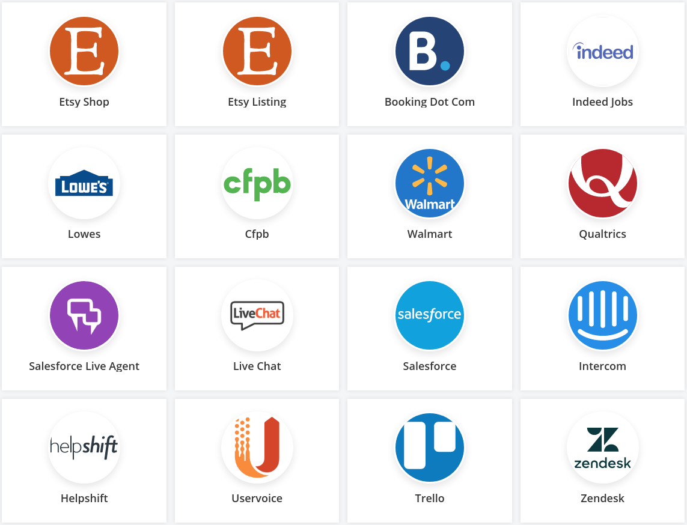

Welcome to the Signals User Guide!¶
Signals is a powerful, yet easy-to-use augmented intelligence platform.
- Signals’ Analytics Engine leverages unsupervised deep machine learning to identify statistically significant topics within any unstructured data.
- Signals is completely web-based. The only software required is a modern web browser such as Google Chrome, Mozilla Firefox, Microsoft Edge (Microsoft IE is not recommended).
- Signals’ web interface is point-and-click. No programming knowledge is required.
This guide covers every feature and function within Signals, if you’re looking for information about a specific topic, jump to a chapter in the left nav bar.
For more information about Signals or Stratifyd, please visit our website.
Quickstart¶
Create an account¶
Begin by Creating an Account. Once you’ve logged in, check out some of the pre-built public dashboards in the folders on the homepage.

Create your first dashboard¶
To create your own dashboard, click “Create a new Dashboard”.

Connect to data¶
Connect to your database, upload a CSV or Excel file, or use one of our Data Connectors for easy access to a wealth of publicly available data. Add as many data source to your dashboard as needed.
{kind=link}
If you’re bringing your own data, specify which fields contain Textual, Temporal, or Geographical information for analysis and normalization. All other fields will be brought in as pivot points and additional visualizations.

Note
See the Mapping Data guide for more details when uploading CSV or Excel Files
Create visualizations¶
Your dashboard will contain visualizations based on the type of data in your analysis by default. See the guide on Processing Data for information on how to interpret these visualizations. Every visualization is clickable, and clicking will apply a filter on your data based on your selection.

Now you’re ready to Create Your Own Widgets using your other datapoints to home in on interesting segments within your data and discover topics and themes within your textual data.
Find meaningful insights¶
Let the visualizations guide your analysis. Click on areas of interest to drill-down into subsets of data
Click on the “Data” tab to view the original documents. If you’ve filtered down to a subset of your data in your dashboard, you’ll see only those documents.
For more information see the chapter on Analyzing Data.
Create an account¶
Connect to data¶
- Connecting to Data
- Enterprise Data Connectors
- 3rd Party Data Connectors
- Public Data Connectors
- iOS Store Reviews
- Google Play Store Reviews
- Home Depot Product Reviews
- Lowes Product Reviews
- Best Buy Product Reviews
- Wal Mart Product Reviews
- Etsy Shop Reviews
- Etsy Product Reviews
- Amazon Product Reviews
- Weibo search
- Youku
- YouTube Comments
- Consumer Financial Protection Bureau
- Indeed
- Consumer Affairs
- Signals SDK
- Mapping Data